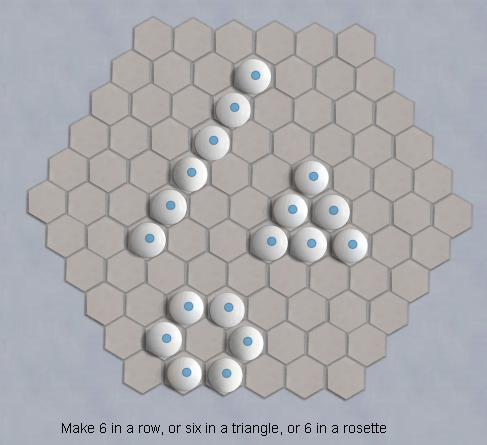
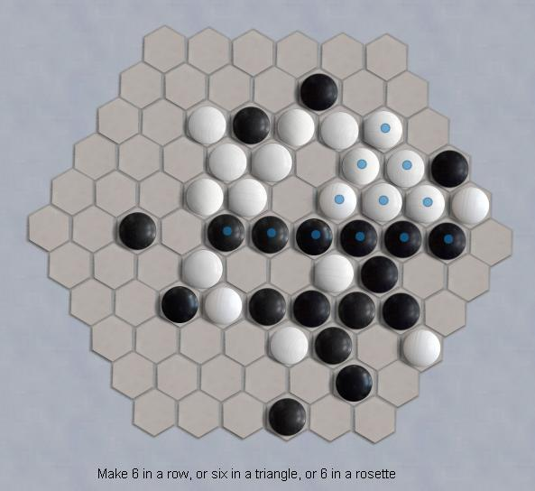

 |
- The
game starts on an empty board. Players move in turn to place one stone
on an empty cell. White moves first. The second player must place
their first stone at least 2 stones away from the white's first stone.
After that, stones can be placed on any empty space.
- Pairs of stones sandwiched between two enemy stones, including the current move, are captured, pente style.
- The
game is won by the first player to complete a line of 6, a triangle of
six, or a rosette of 6, and that shape survives to the next turn
without being destroyed by a capture. These shapes can be
embedded in larger collections of stones.
| 
|